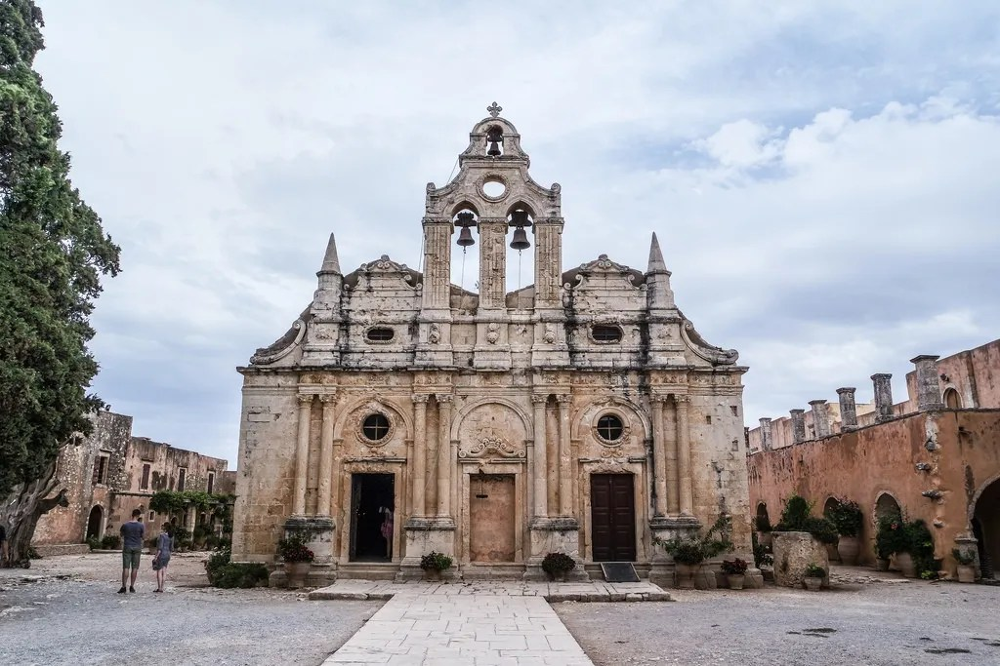

"The 16th-century facade, blending Renaissance and Baroque elements, stands as a testament to Cretan resilience."
A Symbol of Freedom
Arkadi is more than a monastery; it is a national sanctuary. It played a pivotal role in the Cretan resistance against Ottoman rule during the 1866 revolution.
Architectural Features
- Venetian Facade: One of the finest examples of the Cretan Renaissance.
- The Powder Magazine: The site of the tragic sacrifice where locals chose death over surrender.
- The Museum: Houses sacred icons, manuscripts, and weapons from the revolution.